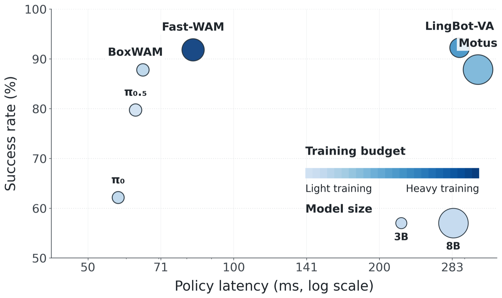

What is the minimal future a robot needs to imagine?
World action models (WAMs) are policy models that explicitly predict both actions and future world states, and have been shown to outperform action-only models across robotic manipulation tasks. However, representing the future with full-frame video prediction is computationally expensive during both training and inference. This raises a central question: what is the minimal state representation that preserves the planning and supervision benefits of future prediction? We propose BoxWAM, which replaces dense future frames with oriented bounding-box trajectories of task-relevant objects. By explicitly imagining object-centric future motion, our method provides a lightweight prediction target that captures the key physical changes induced by robot actions. Box-trajectory prediction substantially reduces computational cost while improving action-prediction performance, suggesting that object-centric compact states are an efficient alternative to video-based world action modeling for manipulation.
Each object's future is the image-plane location of the 8 corners of its minimum-volume oriented 3D bounding box: a 16-dimensional vector per object that keeps coarse shape and motion while discarding background texture, lighting, and shadows.
Object-centric box states
The whole future state is the box trajectory of the actively manipulated object: the one the gripper is touching, or about to touch. The active box automatically shifts across task stages (e.g. pod → machine → mug).
Flow matching
A flow-matching DiT jointly denoises future box tokens and action tokens. Frozen DINOv3 encodes the scene + wrist views into context; proprioception & flow-time enter via adaptive layer-norm.
Causal attention
A causal mask lets actions attend to imagined future boxes, but stops boxes from attending to future actions, so the box trajectory acts as an object-motion plan that steers, not follows, the action chunk.
Inference pipeline
Predicted boxes across all 50 RoboTwin2.0 tasks
One successful clean-setting rollout per task from the multi-task π0.5 + BoxWAM model (50 tasks × 50 demonstrations), with the predicted box trajectory drawn on every frame. Played at 2× speed.
BoxWAM improves action prediction at near-zero extra cost
Across simulation and real robots, predicting compact box futures beats action-only imitation, while adding only a few milliseconds of inference latency compared with the tens of milliseconds that dense video or latent futures cost.
Real-world manipulation
| Method | Coffee SR | Coffee Prog. | Water SR | Water Prog. | Pokémon SR | Pokémon Prog. | Average |
|---|---|---|---|---|---|---|---|
| Diffusion Policy | 10.0 | 34.0 | 8.0 | 9.4 | 34.0 | 47.0 | 23.7 |
| Flow (action-only) | 24.0 | 48.0 | 48.0 | 54.7 | 60.0 | 72.0 | 51.1 |
| BoxWAM | 26.0 | 54.4 | 66.0 | 70.7 | 70.0 | 78.0 | 60.85 |
Single-task simulation on RoboTwin2.0
Success rate (%) per task, 50 demonstrations per task. BoxWAM and Flow (action-only): 3 seeds × 100 trials. Other baselines from the RoboTwin2.0 leaderboard; π0 is pretrained. Scroll sideways for all nine tasks.
| Method | Obs. | Avg. | Adjust Bottle | Beat Hammer | Click Alarm | Grab Roller | Handover Mic | Lift Pot | Open Laptop | Pick Dual Bottles | Turn Switch |
|---|---|---|---|---|---|---|---|---|---|---|---|
| Clean setting | |||||||||||
| DP | 1× RGB | 55.4 | 97.0 | 42.0 | 61.0 | 98.0 | 53.0 | 39.0 | 49.0 | 24.0 | 36.0 |
| ACT | 3× RGB | 60.4 | 97.0 | 56.0 | 32.0 | 94.0 | 85.0 | 88.0 | 56.0 | 31.0 | 5.0 |
| DP3 (uses depth) | 1× RGB-D | 81.2 | 99.0 | 72.0 | 77.0 | 98.0 | 100.0 | 97.0 | 82.0 | 60.0 | 46.0 |
| π0 | 3× RGB | 71.4 | 90.0 | 43.0 | 63.0 | 96.0 | 98.0 | 84.0 | 85.0 | 57.0 | 27.0 |
| Flow (action-only) | 1× RGB | 73.2 | 99.7 | 63.0 | 90.3 | 99.7 | 58.3 | 69.3 | 81.0 | 47.7 | 50.0 |
| BoxWAM | 1× RGB | 78.3 | 97.7 | 67.7 | 95.0 | 100.0 | 65.3 | 84.3 | 80.0 | 62.0 | 52.3 |
| Randomized setting | |||||||||||
| DP | 1× RGB | 0.7 | 0.0 | 0.0 | 5.0 | 0.0 | 0.0 | 0.0 | 0.0 | 0.0 | 1.0 |
| ACT | 3× RGB | 6.3 | 23.0 | 3.0 | 4.0 | 25.0 | 0.0 | 0.0 | 0.0 | 0.0 | 2.0 |
| DP3 (uses depth) | 1× RGB-D | 5.1 | 3.0 | 8.0 | 14.0 | 2.0 | 3.0 | 0.0 | 7.0 | 1.0 | 8.0 |
| π0 | 3× RGB | 33.1 | 56.0 | 21.0 | 11.0 | 80.0 | 13.0 | 36.0 | 46.0 | 12.0 | 23.0 |
| Flow (action-only) | 1× RGB | 32.6 | 72.3 | 18.7 | 17.7 | 77.7 | 1.0 | 6.3 | 43.3 | 18.3 | 38.0 |
| BoxWAM | 1× RGB | 37.8 | 88.7 | 29.3 | 29.3 | 78.3 | 0.0 | 22.7 | 40.3 | 16.7 | 34.7 |
BoxWAM has the best randomized-setting average, and the best clean-setting average among RGB-only methods (only depth-based DP3 scores higher).
Multi-task generalist on RoboTwin2.0
2,500 demonstrations (50 tasks × 50) · joint-position control
| Method | Clean | Randomized | Latency |
|---|---|---|---|
| π0.5 | 52.6 | 26.9 | 55.3 ms |
| π0.5 + BoxWAM | 61.5 | 34.0 | 57.7 ms |
Comparison with existing world action models
27,500 demonstrations · end-effector pose control
A separate, larger protocol from the multi-task table above: π0.5 + BoxWAM is fine-tuned on 27,500 RoboTwin2.0 demonstrations with end-effector pose actions for 35k steps (predict 50 actions, execute 36), and compared against existing WAMs. Latency on an RTX Pro 6000.

BoxWAM stays within a few milliseconds of π0.5 while closing most of the gap to much larger, slower WAMs. For reference, a differential-IK baseline (Mink + M2T2) given ground-truth task plans, poses, depth and masks reaches 26.78% Easy / 26.30% Hard.
Why boxes? Future-state representation ablation
| Future state | Latency | Clean | Randomized |
|---|---|---|---|
| Action only | 168.3 ms | 73.2 | 32.6 |
| Dense video (Wan2.2 VAE) | 250.5 ms | 80.1 | 34.5 |
| Latent (DINOv3 ViT-L) | 251.4 ms | 69.9 | 29.0 |
| 6D object pose | ≈ box | 73.2 | 32.1 |
| 2D OBB | ≈ box | 74.2 | 30.7 |
| Functional keypoints | ≈ box | 75.3 | 27.8 |
| End-effector trajectory | ≈ box | 74.0 | 32.6 |
| Box trajectory, projected 3D OBB (ours) | 172.4 ms | 78.3 | 37.8 |
Box futures add just +4.1 ms over action-only and outperform every other compact state in both settings. Dense VAE scores highest on clean but costs ~82 ms more, and needs 15k training steps vs. 6k for the compact variants. "≈ box": same latency as the box variant.
Attention ablation
| Design | Attention | Clean | Randomized |
|---|---|---|---|
| Flow (action-only) | N/A | 73.2 | 32.6 |
| Fully separate prediction | State ⟂ Action | 76.6 | 37.4 |
| Fully joint prediction | State ⇔ Action | 76.7 | 32.9 |
| Action then future | State ← Action | 76.1 | 35.5 |
| Future then action (BoxWAM) | State → Action | 78.3 | 37.8 |
BoxWAM works best when actions can attend to imagined future boxes, but boxes cannot attend to future actions. In other words, the box plan leads. All runtimes measured on an RTX Pro 6000 Blackwell GPU.